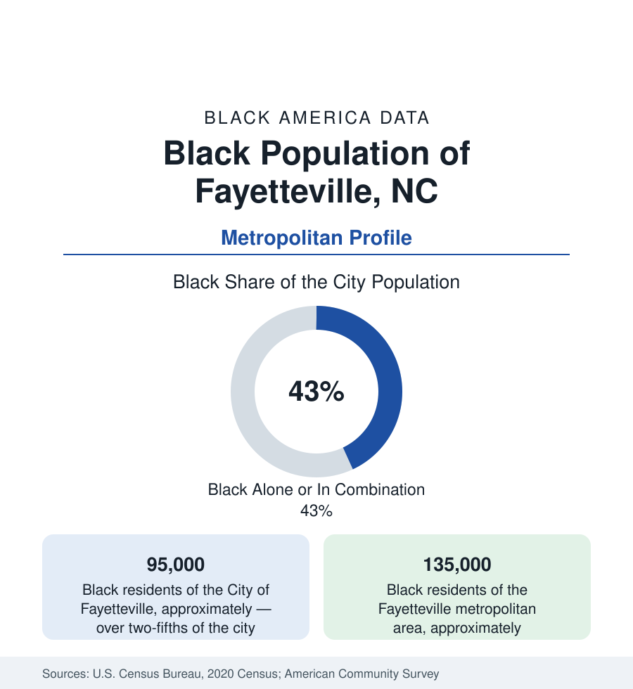

Black Cities
Black Fayetteville: Fort Liberty's City and the Sandhills
Fayetteville holds about 95,000 Black residents in the city and 135,000 across the metro — a community built beside the Army's largest post. The census profile.

Fayetteville holds about 95,000 Black residents within the city — Black alone or in combination, over two-fifths of its 210,000 people — and about 135,000 across the metropolitan area. The city's modern fact is Fort Liberty (the installation long known as Fort Bragg), the Army's largest post by population, whose Black soldiers, families, and retirees make Fayetteville one of the most military Black communities in America — layered over an older Sandhills Black history that reaches to the Cape Fear River's first settlements.
The Post's City: Soldiers, Families, Retirees
The military file dominates the data in the way the military profile predicts at maximum scale: tens of thousands of active-duty soldiers at the post (the 82nd Airborne and the special operations commands), a Black share of the enlisted and officer corps well above the national population share, and the ecosystem the post sustains — the military families of the Bragg Boulevard and Yadkin Road corridors, the retirees who stayed (Cumberland County's veteran population is among the densest in the state data, its Black retirees a professional class of senior NCOs and officers with pensions and second careers), and the defense-contractor and support economy of the gates. Spring Lake and Hope Mills hold the post's suburban overflow; the city's east side and the Murchison Road corridor — Fayetteville State University's street — hold the older civilian community, its churches, the FSU Broncos' campus (the HBCU founded 1867 as the Howard School, among the oldest in the state file), and the commercial districts that served Black Fayetteville through the base's Jim Crow decades and its integration alike.
The Older Fayetteville: River, Slavery, and the Plank Road
Beneath the post's city lies the river town's record: Fayetteville was the Cape Fear's inland port and a slave-market town — the State Bank and the market house (the city's landmark, built over the old market where enslaved people were sold, its archive contested and interpreted in the current public history) — and its free Black community of artisans and boatmen predates the republic's first century. The plank-road and turpentine economies employed the Sandhills' Black workforce; the Great Migration thinned it; the post's 1918 founding and its wartime expansions rebuilt the population on federal payrolls. The civil-rights file runs through FSU's students and the downtown lunch counters in the standard Carolina pattern, and the city's Black political data (its mayors and council strength in the modern record) reflect the two-fifths share directly.
The Indicators of a Garrison Town
The data carry the garrison signature: a young median age (the soldiers), high household turnover (the PCS cycle churning the rental data), incomes anchored to military pay scales and federal employment (stable, benefit-rich, and capped in the distributions the pay tables set), Black homeownership substantially VA-financed in the subdivisions around the post — the military mortgage machine at its most concentrated — and the school data of a district (Cumberland County Schools, among the state's largest) whose enrollment is heavily military-connected and substantially Black. The vulnerabilities are the base economy's own: deployment cycles in the retail data, the defense budget's local multiplier, and the transition file — the separating soldiers whose decision to stay or leave is the metro's annual demographic referendum, its veteran-services and community-college (Fayetteville Tech's military programs) infrastructure built to win it.
Change and the Estimates
The estimates show the metro growing with the post's missions — the special operations expansions of the past decades compounding — the Black population growing in count, the suburbs of Harnett and Hoke counties absorbing the overflow (Raeford's and Lillington's shares rising), and downtown Fayetteville's revival (the Hay Street corridor, the ballpark district) repricing the center beside the Murchison corridor's community-led reinvestment plans. The Lumbee file touches the metro's south (Robeson County's tri-racial data an hour down the road), and the Sandhills' rural Black communities of the state file send their graduates to the post and the university in the old proportions.
Reading the Fayetteville Numbers
Fayetteville is the garrison profile at full strength: two-fifths Black, substantially in uniform or married to it, its middle class salaried by the republic it serves. Its 135,000 metro residents hold the data's clearest case that the military remains Black America's most reliable ladder — because in Fayetteville, the ladder is the town.
More in Black Cities
Black Atlanta: Population, Distribution, and Growth of a Black Metropolis
Metro Atlanta holds more than two million Black residents — roughly one in three, second only to New York. The suburban distribution, migration history, and composition of Black Atlanta in the census data.
Black New York: The Largest Black Population in America
The New York metropolitan area holds about 3.4 million Black residents — more than any metro in the nation — and the city itself about two million. The census profile.
Black Washington: The District and the Metro
The Washington metro holds about 1.6 million Black residents, and the District itself — long a majority-Black city — now records a Black share near 41 percent. The census profile.
Source: U.S. Census Bureau, 2020 Census; American Community Survey; Population Estimates Program.